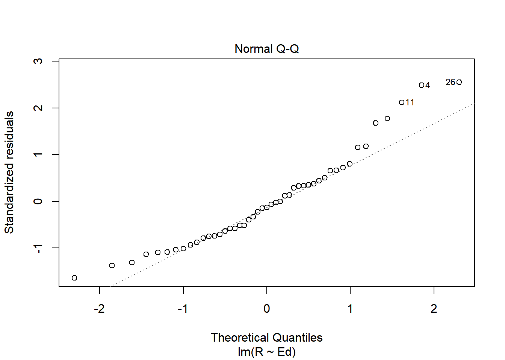
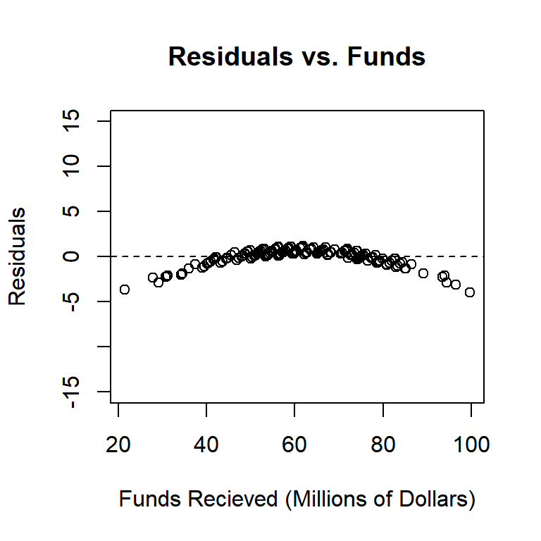
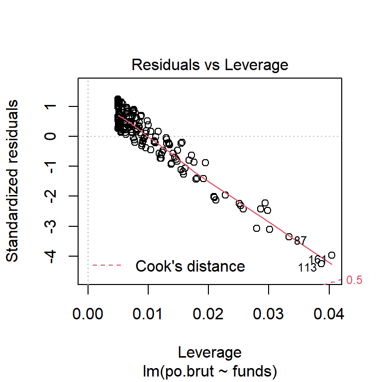
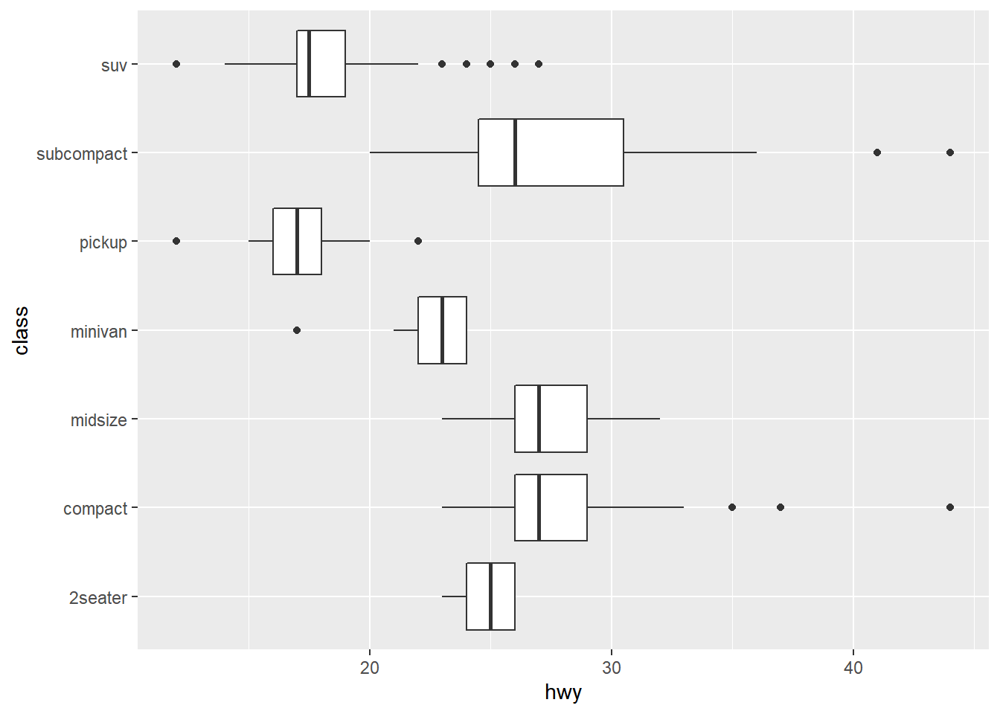
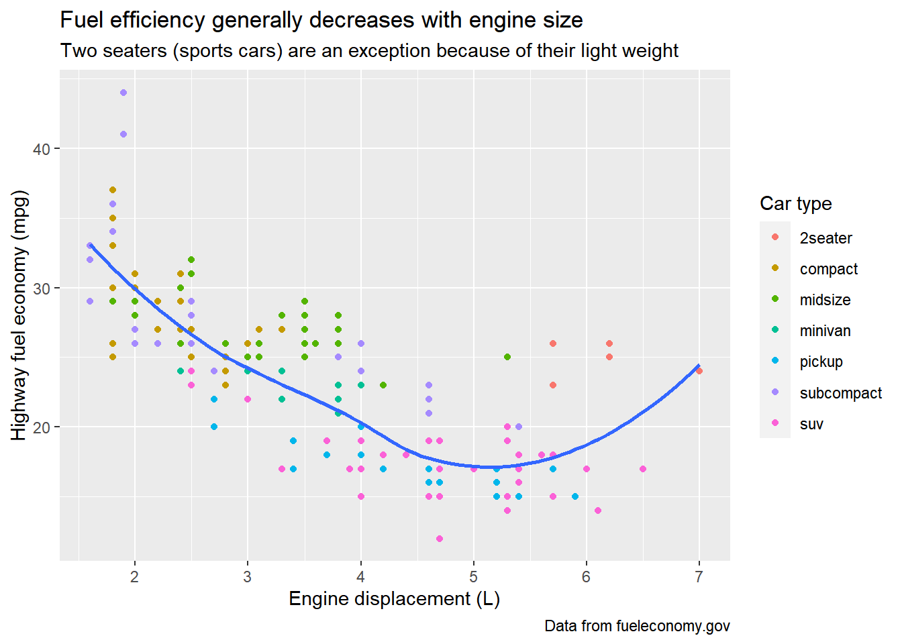
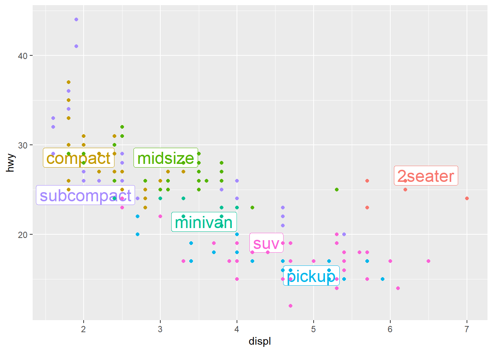
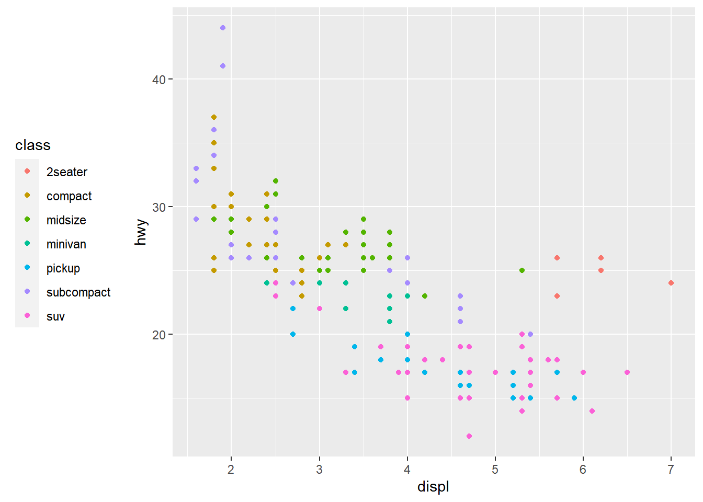
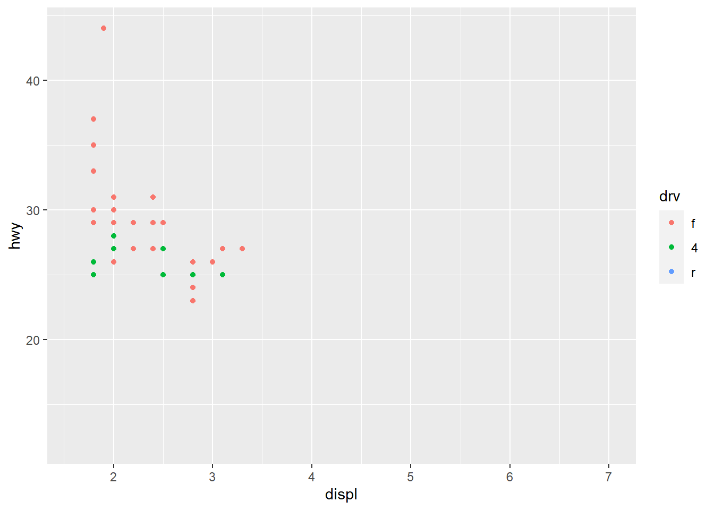

Assignments
This page will contain all the assignments you submit for the class.
Instructions for all assignments
I want you to submit your assignment as a PDF, so I can keep a record of what the code looked like that day. I also want you to include your answers on your personal GitHub website. This will be good practice for editing your website and it will help you produce something you can keep after the class is over.
Download the Assignment1.Rmd file from Canvas. You can use this as a template for writing your answers. It’s the same as what you can see on my website in the Assignments tab. Once we’re done with this I’ll edit the text on the website to include the solutions.
On RStudio, open a new R script in RStudio (File > New File > R Script). This is where you can test out your R code. You’ll write your R commands and draw plots here.
Once you have finalized your code, copy and paste your results into this template (Assignment 1.Rmd). For example, if you produced a plot as the solution to one of the problems, you can copy and paste the R code in R markdown by using the
``{r} ```command. Answer the questions in full sentences and Save.Produce a PDF file with your answers. To do this, knit to PDF (use Knit button at the top of RStudio), locate the PDF file in your docs folder (it’s in the same folder as the Rproj), and submit that on on Canvas in Assignment 1.
Build Website, go to GitHub desktop, commit and push. Now your solutions should be on your website as well.
Assignment 1
Problem 1
Install the datasets package on the console below using install.packages("datasets"). Now load the library.
#install.packages("datasets")
library(datasets)
USArrests## Murder Assault UrbanPop Rape
## Alabama 13.2 236 58 21.2
## Alaska 10.0 263 48 44.5
## Arizona 8.1 294 80 31.0
## Arkansas 8.8 190 50 19.5
## California 9.0 276 91 40.6
## Colorado 7.9 204 78 38.7
## Connecticut 3.3 110 77 11.1
## Delaware 5.9 238 72 15.8
## Florida 15.4 335 80 31.9
## Georgia 17.4 211 60 25.8
## Hawaii 5.3 46 83 20.2
## Idaho 2.6 120 54 14.2
## Illinois 10.4 249 83 24.0
## Indiana 7.2 113 65 21.0
## Iowa 2.2 56 57 11.3
## Kansas 6.0 115 66 18.0
## Kentucky 9.7 109 52 16.3
## Louisiana 15.4 249 66 22.2
## Maine 2.1 83 51 7.8
## Maryland 11.3 300 67 27.8
## Massachusetts 4.4 149 85 16.3
## Michigan 12.1 255 74 35.1
## Minnesota 2.7 72 66 14.9
## Mississippi 16.1 259 44 17.1
## Missouri 9.0 178 70 28.2
## Montana 6.0 109 53 16.4
## Nebraska 4.3 102 62 16.5
## Nevada 12.2 252 81 46.0
## New Hampshire 2.1 57 56 9.5
## New Jersey 7.4 159 89 18.8
## New Mexico 11.4 285 70 32.1
## New York 11.1 254 86 26.1
## North Carolina 13.0 337 45 16.1
## North Dakota 0.8 45 44 7.3
## Ohio 7.3 120 75 21.4
## Oklahoma 6.6 151 68 20.0
## Oregon 4.9 159 67 29.3
## Pennsylvania 6.3 106 72 14.9
## Rhode Island 3.4 174 87 8.3
## South Carolina 14.4 279 48 22.5
## South Dakota 3.8 86 45 12.8
## Tennessee 13.2 188 59 26.9
## Texas 12.7 201 80 25.5
## Utah 3.2 120 80 22.9
## Vermont 2.2 48 32 11.2
## Virginia 8.5 156 63 20.7
## Washington 4.0 145 73 26.2
## West Virginia 5.7 81 39 9.3
## Wisconsin 2.6 53 66 10.8
## Wyoming 6.8 161 60 15.6Load the USArrests dataset and rename it dat. Note that this dataset comes with R, in the package datasets, so there’s no need to load data from your computer. Why is it useful to rename the dataset?
It is useful to renamed USArrests to dat.us because it is easier to write and it is good practice to rewrite data for yourself so you can create your own data which can be replicated by another person if they use the original data.
dat.us <- USArrests
head(dat.us)## Murder Assault UrbanPop Rape
## Alabama 13.2 236 58 21.2
## Alaska 10.0 263 48 44.5
## Arizona 8.1 294 80 31.0
## Arkansas 8.8 190 50 19.5
## California 9.0 276 91 40.6
## Colorado 7.9 204 78 38.7Problem 2
Use this command to make the state names into a new variable called State.
dat.us$state <- tolower(rownames(USArrests))This dataset has the state names as row names, so we just want to make them into a new variable. We also make them all lower case, because that will help us draw a map later - the map function requires the states to be lower case.
List the variables contained in the dataset USArrests.
names(dat.us)## [1] "Murder" "Assault" "UrbanPop" "Rape" "state"Answer: The four variables are Murder, Assault, UrbanPop, Rape.
Problem 3
What type of variable (from the DVB chapter) is Murder?
Answer: Murder is a quantitative variable.
What R Type of variable is it?
Answer: Murder is numeric.
Problem 4
What information is contained in this dataset, in general? What do the numbers mean?
Answer: The dataset contains the data of murder, assault, rape and urbanpop from all 50 US states. The numbers represent the frequency of arrests for one of the four variables in a state during the time frame that the data was collected.
Problem 5
Draw a histogram of Murder with proper labels and title.
hist(dat.us$Murder, xlab= "Murders", ylab="Frequency", main= "Murder in the US", xlim=(c(0, 20)), ylim=(c(0, 13)), col="red", breaks= 10)Problem 6
Please summarize Murder quantitatively. What are its mean and median? What is the difference between mean and median? What is a quartile, and why do you think R gives you the 1st Qu. and 3rd Qu.?
summary(dat.us$Murder)## Min. 1st Qu. Median Mean 3rd Qu. Max.
## 0.800 4.075 7.250 7.788 11.250 17.400Answer: The mean for Murder is 7.788 and the median is 7.250. The mean is the amount that each subject would have if all of the values were added together and evenly distributed. If all 50 states had the same frequency of arrests for murders then it would be 7.788. The median is the middle value where exactly 50% of the values fall either above or below it. In the US, 50% of states have an arrest for murder frequency above 7.250 and the other 50% is below that. The median is highly robust because it is not greatly affected by outliers. The mean is the most common measure of central tendency but it is not robust because it will change based on the skewness of the distribution. A quartile indicates an interval that contains 25% or a quarter of the data.The first quartile for “Murder” is 4.075 which means that 25% of the “Murder” data falls below 4.075 and the 3rd quartile is 11.250 which means that 25% of US states have a frequency of arrests for murder that is higher than 11.250. R gives you the 1st and 3rd quartile because those values are useful in determining the interquartile range (IQR). The IQR is the central half which means that 50% of the data falls within the 1st and 3rd quartile. In a box plot, values 1.5 IQRs above or below the tails are considered outliers.
Problem 7
Repeat the same steps you followed for Murder, for the variables Assault and Rape. Now plot all three histograms together. You can do this by using the command par(mfrow=c(3,1)) and then plotting each of the three.
par(mfrow=c(3,1))
hist(dat.us$Murder, xlab= "Murders", ylab="Frequency", main= "Murder in the US", xlim=(c(0, 20)), ylim=(c(0, 13)), col="red", breaks= 10)
hist(dat.us$Assault, xlab= "Assaults", ylab="Frequency", main= "Assault in the US", xlim=(c(0, 350)), ylim=(c(0, 15)), col="blue", breaks=10)
hist(dat.us$Rape, xlab= "Rapes", ylab="Frequency", main= "Rape in the US", xlim=(c(0, 50)), ylim=(c(0, 15)), col="green", breaks=10)
What does the command par do, in your own words (you can look this up by asking R ?par)?
Answer: Command par is used to set parameters. The mfrow input allows you to create an array to plot multiple graphs on one window. The command par(mfrow=c(3,1)) allows three graphs to be plotted in three rows.
What can you learn from plotting the histograms together?
Answer: When the histograms are plotted together it is easier to compare the skewness and spread of each plot. You can see where each histogram has its peaks and outliers.
Problem 8
In the console below (not in text), type install.packages("maps") and press Enter, and then type install.packages("ggplot2") and press Enter. This will install the packages so you can load the libraries.
Run this code:
#install.packages("maps")
#install.packages("ggplot2")
library(maps)
library(ggplot2)
ggplot(dat.us, aes(map_id=state, fill=Murder)) +
geom_map(map=map_data("state")) +
expand_limits(x=map_data("state")$long, y=map_data("state")$lat)What does this code do? Explain what each line is doing.
Answer: The lines library(‘maps’) and library(‘ggplot2’) are pulling from the packages that were installed. The line ggplot(dat.us, aes(map_id=state, fill=Murder)) is creating a ggplot with the USArrests dataset. The plot is set with an aesthetic of a map with the US states. Each state is filled in with its respective murder arrest data. The line geom_map(map=map_data(“state”)) contains the map coordinates for each US state.The last line ‘expand_limits(x=map_data(“state”)\(long, y=map_data("state")\)lat)’ ensures that the limits of the plot include a single value for all plots. The x and y axis of this plot contains the value of “state” from the map data. The x axis is longitude and the y axis is latitude. Together this code creates a map of the US with each state filled in with its value for murder arrests.The darker blue indicates that the murder arrest frequency is 5 and below and the light blue indicates that it is 15 and above.
\[\\[2in]\]
Assignment 2
Problem 1
dat <- read.csv(file = 'dat.nsduh.small.1.csv')
head(dat)## mjage cigage iralcage age2 sexatract speakengl irsex
## 1 14 50 14 16 1 1 1
## 2 11 14 5 13 2 1 2
## 3 12 35 12 15 2 1 2
## 4 16 18 18 14 1 1 1
## 5 14 16 14 16 4 1 1
## 6 12 16 18 15 4 1 2names(dat)## [1] "mjage" "cigage" "iralcage" "age2" "sexatract" "speakengl"
## [7] "irsex"dim(dat)## [1] 171 7What are the dimensions of the dataset?
Answer: The data has 7 columns for the 7 variables (mjage, cigage, iralcage, age2, sexatract, speakeng1 and irsex). There are 171 observations in the data.
Problem 2
Describe the variables in the dataset.
Answer:There are 7 variables in the dataset. mjage represents the age whne the participants first used marijuana or hashish. Cigage represents the age when the participants first started smoking cigarettes everyday. Iralcage is the age when participants first tried alcohol. Age2 is the final edited age of the participants. Irsex represents the gender of participants. Sexatract is the sexual attraction of the participants. Speakeng represents how well the participant speaks english.
What is this dataset about? Who collected the data, what kind of sample is it, and what was the purpose of generating the data?
Answer:This dataset is a small sample from the 2019 survey from the National Survey of Drug Use and Health about drug use in the 50 states and the District of Columbia in the United States. The survey was directed by the Sibstance Abuse and Mental Health Services Administration and it was conducted by RTI International. The survey is used to determine which populations and geographic areas have particular substance use problems so federal resources can be used effectivly.
Problem 3: Age and gender
What is the age distribution of the sample like? Make sure you read the codebook to know what the variable values mean.
hist(dat$age2, xlab= "Final Edited Age", main= "Age Distribution of NSDUH 2019 Survey", col="purple")
Answer:The age distribution is negatively skewed because the bulk of the data is in the upper range with thin tails in the lower range. This shows that most of the respondents of the survey were 25 years old to greater than 65 years old. This age variable is categorical because the numbers represent categories of age for example 12 indicates that the respondent is 24 or 25 years old.
Do you think this age distribution representative of the US population? Why or why not?
Answer:I do not think this age distribution is representative of the US population because while the households chosen for the survey are randomly selected, only one person per household can respond to the survey and the interviews are completed online and not every person in the US has access to a computer or internet. There is also a money incentive to complete the survey.It is possible that more middle aged people responded to the survey.
Is the sample balanced in terms of gender? If not, are there more females or males?
Use this code to draw a stacked bar plot to view the relationship between sex and age. What can you conclude from this plot?
tab.agesex <- table(dat$irsex, dat$age2)
barplot(tab.agesex,
main = "Stacked barchart",
xlab = "Age category", ylab = "Frequency",
legend.text = rownames(tab.agesex),
beside = FALSE) 
Answer:The sample is not fully balanced in terms of gender. There are more females with 52.28% of respondents being female and 47.72% being male.
Answer:From this plot, we can determine that the relationship between sex and age is fairly even. For the largest age group, the gender distribution appears to be almost equal. However, for the lower age groups there appears to be more female respondents and for the higher age distributions there appears to be more male respondents.
Problem 4: Substance use
For which of the three substances included in the dataset (marijuana, alcohol, and cigarettes) do individuals tend to use the substance earlier?
par(mfrow=c(3,1))
hist(dat$mjage, col="green", xlab= "Age of first Marijuana Use", main= "Age Distribution of First Marijuana Use", xlim= c(0,50), ylim= c(0,100))
hist(dat$cigage, col="grey", xlab= "Age of first Cigarette Use", main= "Age Distribution of First Cigarette Use", xlim= c(0,50), ylim= c(0,100))
hist(dat$iralcage, col="orange", xlab= "Age of first Alcohol Use", main= "Age Distribution of First Alcohol Use", xlim= c(0,50), ylim= c(0,100)) Answer:Individuals tend to first start using marijuana and alcohol at a much younger age than cigarettes but individuals tend to first start using alcohol earliest.
Problem 5: Sexual attraction
What does the distribution of sexual attraction look like? Is this what you expected?
tab.sexatract <- table(dat$sexatract)
barplot(tab.sexatract, main= "Sexual Attraction Distribution", xlab= "Sexual Attraction", ylab= "Frequency")Answer:Most participants are only attracted to the opposite sex. This is expected because respondents might not have felt comfortable answering this question unless they were only attracted to the same sex since there is stigma for different sexual attractions. The “99” category is significant because a large portion of respondents (23.87%) skipped this question which could indicate that people were not comfortable answering this question.
What is the distribution of sexual attraction by gender?
tab.sexatractsex <- table(dat$irsex, dat$sexatract)
barplot(tab.sexatractsex,
main = "Stacked barchart",
xlab = "Age category", ylab = "Frequency",
legend.text = rownames(tab.sexatractsex),
beside = FALSE) Problem 6: English speaking
What does the distribution of English speaking look like in the sample? Is this what you might expect for a random sample of the US population?
tab.speakeng <- table(dat$speakengl)
barplot(tab.speakeng, xlab= "How Well English is Spoken", ylab= "Frequency", names.arg = c("Very Well","Well","Not Well"), main = "Distribution of English Speaking")
Answer:Most of the participants speak English very well which is expected because for the most part the US is an english speaking country. It might have been hard for non-english speakers to engage with the survey if interpreters or different language options were not available.
Are there more English speaker females or males?
tab.speakengsex <- table(dat$irsex, dat$speakengl)
barplot(tab.speakengsex,
main = "Stacked barchart",
xlab = "Age category", ylab = "Frequency",
legend.text = rownames(tab.speakengsex),
beside = FALSE) 
Answer:There appears to be an equal amount of English speaking females and males.
\[\\[2in]\]
Exam 1
Load the data into an R data frame.
#read.csv(file = 'fatal-police-shootings-data.csv')
dat <- read.csv(file = 'fatal-police-shootings-data.csv')
head(dat)## id name date manner_of_death armed age gender race
## 1 3 Tim Elliot 2015-01-02 shot gun 53 M A
## 2 4 Lewis Lee Lembke 2015-01-02 shot gun 47 M W
## 3 5 John Paul Quintero 2015-01-03 shot and Tasered unarmed 23 M H
## 4 8 Matthew Hoffman 2015-01-04 shot toy weapon 32 M W
## 5 9 Michael Rodriguez 2015-01-04 shot nail gun 39 M H
## 6 11 Kenneth Joe Brown 2015-01-04 shot gun 18 M W
## city state signs_of_mental_illness threat_level flee
## 1 Shelton WA True attack Not fleeing
## 2 Aloha OR False attack Not fleeing
## 3 Wichita KS False other Not fleeing
## 4 San Francisco CA True attack Not fleeing
## 5 Evans CO False attack Not fleeing
## 6 Guthrie OK False attack Not fleeing
## body_camera longitude latitude is_geocoding_exact
## 1 False -123.122 47.247 True
## 2 False -122.892 45.487 True
## 3 False -97.281 37.695 True
## 4 False -122.422 37.763 True
## 5 False -104.692 40.384 True
## 6 False -97.423 35.877 TrueProblem 1
- Describe the dataset. This is the source: https://github.com/washingtonpost/data-police-shootings . Write two sentences (max.) about this.
This dataset contains the data of fatal police shootings of civilians in 2015. The data was collected from the Washington Post using local news reports, law enforcement websites, social media and independent databases.
- How many observations are there in the data frame?
dim(dat)## [1] 6594 17There are 6594 rows (observations) in the dataset with 17 columns.
- Look at the names of the variables in the data frame. Describe what “body_camera”, “flee”, and “armed” represent, according to the codebook. Again, only write one sentence (max) per variable.
names(dat)## [1] "id" "name"
## [3] "date" "manner_of_death"
## [5] "armed" "age"
## [7] "gender" "race"
## [9] "city" "state"
## [11] "signs_of_mental_illness" "threat_level"
## [13] "flee" "body_camera"
## [15] "longitude" "latitude"
## [17] "is_geocoding_exact"The variable “body_camera indicates that the police officer was wearing a body camera and may have recorded some parts of the incident. The variable”flee" means that the victim was moving away from the officers. The variable “armed” means that victim had an instrument that the police believed could inflict harm.
- What are three weapons that you are surprised to find in the “armed” variable? Make a table of the values in “armed” to see the options.
table(dat$armed)##
## air conditioner
## 207 1
## air pistol Airsoft pistol
## 1 3
## ax barstool
## 24 1
## baseball bat baseball bat and bottle
## 20 1
## baseball bat and fireplace poker baseball bat and knife
## 1 1
## baton BB gun
## 6 15
## BB gun and vehicle bean-bag gun
## 1 1
## beer bottle binoculars
## 3 1
## blunt object bottle
## 5 1
## bow and arrow box cutter
## 1 13
## brick car, knife and mace
## 2 1
## carjack chain
## 1 3
## chain saw chainsaw
## 2 1
## chair claimed to be armed
## 4 1
## contractor's level cordless drill
## 1 1
## crossbow crowbar
## 9 5
## fireworks flagpole
## 1 1
## flashlight garden tool
## 2 2
## glass shard grenade
## 4 1
## gun gun and car
## 3798 12
## gun and knife gun and machete
## 22 3
## gun and sword gun and vehicle
## 1 17
## guns and explosives hammer
## 3 18
## hand torch hatchet
## 1 14
## hatchet and gun ice pick
## 2 1
## incendiary device knife
## 2 955
## knife and vehicle lawn mower blade
## 1 2
## machete machete and gun
## 51 1
## meat cleaver metal hand tool
## 6 2
## metal object metal pipe
## 5 16
## metal pole metal rake
## 4 1
## metal stick microphone
## 3 1
## motorcycle nail gun
## 1 1
## oar pellet gun
## 1 3
## pen pepper spray
## 1 2
## pick-axe piece of wood
## 4 7
## pipe pitchfork
## 7 2
## pole pole and knife
## 3 2
## railroad spikes rock
## 1 7
## samurai sword scissors
## 4 9
## screwdriver sharp object
## 16 14
## shovel spear
## 7 2
## stapler straight edge razor
## 1 5
## sword Taser
## 23 34
## tire iron toy weapon
## 4 226
## unarmed undetermined
## 421 188
## unknown weapon vehicle
## 82 213
## vehicle and gun vehicle and machete
## 8 1
## walking stick wasp spray
## 1 1
## wrench
## 1I am suprised to see air conditioner, flashlight and stapler in the “armed” variable.
Problem 2
- Describe the age distribution of the sample. Is this what you would expect to see?
hist(dat$age, main= "Age Distribution of Fatal Police Shootings", xlab="Age of Victims", ylab= "Frequency", xlim=(c(0,100)))The distribution of age is skewed to the right. There are some missing values in this distribution. The bulk of the victims were under the age of 40 which makes sense because younger people tend to encounter the police more since they are expected to commit more crimes.
- To understand the center of the age distribution, would you use a mean or a median, and why? Find the one you picked.
summary(dat$age)## Min. 1st Qu. Median Mean 3rd Qu. Max. NA's
## 6.00 27.00 35.00 37.12 45.00 91.00 308Since the age distribution is not a normal bell curve then the median would be a better estimate of the center of the distribution since it is more resistant to skewness.The median of the distribution is 35 years old.
- Describe the gender distribution of the sample. Do you find this surprising?
table(dat$gender)##
## F M
## 3 293 6298dat$gender.nas <- ifelse(dat$gender=="", NA, dat$gender)
table(dat$gender.nas)##
## F M
## 293 6298gender.no.nas <- na.omit(dat$gender.nas)
table(gender.no.nas)## gender.no.nas
## F M
## 293 6298tab.gender <- table(gender.no.nas)
barplot(tab.gender, main= "Gender Distribution of Fatal Police Shootings", xlab= "Gender", ylab="Frequency")The majority of fatal police shooting victims were males. This is expected because the majority of people targeted by the police are males.Missing values were omitted from the distribution because the gender of those victims were unknown.
Problem 3
- How many police officers had a body camera, according to news reports? What proportion is this of all the incidents in the data? Are you surprised that it is so high or low?
table(dat$body_camera)##
## False True
## 5684 910prop.table(table(dat$body_camera))##
## False True
## 0.8619958 0.1380042910 police officers had a body camera according to news reports.This is around 14% of all the incidents in the data. I am surprised that it is so low because I assumed that body cameras have become a norm for police stations but they are expensive and some precincts are not strict with body cameras.
- In how many of the incidents was the victim fleeing? What proportion is this of the total number of incidents in the data? Is this what you would expect?
table(dat$flee)##
## Car Foot Not fleeing Other
## 491 1058 845 3952 248barplot(table(dat$flee))prop.table(table(dat$flee))##
## Car Foot Not fleeing Other
## 0.07446163 0.16044889 0.12814680 0.59933273 0.03760995In 1903 incidents the victim was fleeing.This is about 29% of the data. This variable is a bit confusing because of the missing values and the “other” category. It is hard to get an accurate depiction of the data but this is not what I expect because in theory the police would shoot at a person that is a fleeing threat not standing still.
Problem 4 - Answer only one of these (a or b).
- Describe the relationship between the variables “body camera” and “flee” using a stacked barplot. What can you conclude from this relationship?
Hint 1: The categories along the x-axis are the options for “flee”, each bar contains information about whether the police officer had a body camera (vertically), and the height along the y-axis shows the frequency of that category).
Hint 2: Also, if you are unsure about the syntax for barplot, run ?barplot in R and see some examples at the bottom of the documentation. This is usually a good way to look up the syntax of R code. You can also Google it.
tab.fleecamera <- table(dat$body_camera, dat$flee)
barplot(tab.fleecamera,
main = "Stacked barchart for Flee and Body Cameras",
xlab = "Flee", ylab = "Frequency",
legend.text = rownames(tab.fleecamera),)For all of the categories in “flee”, the majority of police officers did not have a body camera. It appears that the largest proportion of incidents with a body camera are in the “Not fleeing” category however, the “Not fleeing” category has the most observations. Based on this plot it is hard to determine whether or not the victim was actually fleeing because there is no video evidence of the incident.
- Describe the relationship between age and race by using a boxplot. What can you conclude from this relationship?
Hint 1: The categories along the x-axis are the race categories and the height along the y-axis is age.
Hint 2: Also, if you are unsure about the syntax for boxplot, run ?boxplot in R and see some examples at the bottom of the documentation. This is usually a good way to look up the syntax of R code. You can also Google it.
Your answer here.
#Extra credit (10 points)
- What does this code tell us?
mydates <- as.Date(dat$date)
head(mydates)
(mydates[length(mydates)] - mydates[1])This code tells us the dates of all of the incidents and how long the data was collected for by showing the time difference.
- On Friday, a new report was published that was described as follows by The Guardian: “More than half of US police killings are mislabelled or not reported, study finds.” Without reading this article now (due to limited time), why do you think police killings might be mislabelled or underreported?
Police killings might be mislabelled or underreported because there is no documentation of the shootings since the majority of officers involved do not have a body camera to record the incident. We have to rely on the police accounts of the incidents which could be biased since the police do not want to show that they were in the wrong.There is also no national system to report all police shootings to which is confirmed by the way that the data was collected for the Washington Post dataset.
- Regarding missing values in problem 4, do you see any? If so, do you think that’s all that’s missing from the data?
There is missing data for the variable “Flee”.There are two columns in the “flee” variable that could count under missing data. The first column which is actually missing values and the last column which is “other”. The “other” category is not explained so we do not know what that is reporting. There could potentially be more missing data since the majority of incidents do not have video documentation so the police officers could have lied about the fleeing nature of the victim. The category for body cameras could also have missing values if some police officers did not report whether or not they had a body camera on or they lied.
\[\\[2in]\]
Assignment 3
This assignment is due on Canvas on Wednesday 10/27/2021 before class, at 10:15 am. Include the name of anyone with whom you collaborated at the top of the assignment.
Submit your responses as either an HTML file or a PDF file on Canvas. Also, please upload it to your website.
Save the file (found on Canvas) crime_simple.txt to the same folder as this file (your Rmd file for Assignment 3).
Load the data.
library(readr)
library(knitr)
dat.crime <- read_delim("crime_simple.txt", delim = "\t")## Rows: 47 Columns: 14## -- Column specification --------------------------------------------------------
## Delimiter: "\t"
## dbl (14): R, Age, S, Ed, Ex0, Ex1, LF, M, N, NW, U1, U2, W, X##
## i Use `spec()` to retrieve the full column specification for this data.
## i Specify the column types or set `show_col_types = FALSE` to quiet this message.This is a dataset from a textbook by Brian S. Everitt about crime in the US in 1960. The data originate from the Uniform Crime Report of the FBI and other government sources. The data for 47 states of the USA are given.
Here is the codebook:
R: Crime rate: # of offenses reported to police per million population
Age: The number of males of age 14-24 per 1000 population
S: Indicator variable for Southern states (0 = No, 1 = Yes)
Ed: Mean of years of schooling x 10 for persons of age 25 or older
Ex0: 1960 per capita expenditure on police by state and local government
Ex1: 1959 per capita expenditure on police by state and local government
LF: Labor force participation rate per 1000 civilian urban males age 14-24
M: The number of males per 1000 females
N: State population size in hundred thousands
NW: The number of non-whites per 1000 population
U1: Unemployment rate of urban males per 1000 of age 14-24
U2: Unemployment rate of urban males per 1000 of age 35-39
W: Median value of transferable goods and assets or family income in tens of $
X: The number of families per 1000 earning below 1/2 the median income
We are interested in checking whether the reported crime rate (# of offenses reported to police per million population) and the average education (mean number of years of schooling for persons of age 25 or older) are related.
- How many observations are there in the dataset? To what does each observation correspond?
dim(dat.crime)## [1] 47 14There are 47 observations in the dataset. Each observation corresponds to one state since the data includes information from 47 out of the 50 states.
- Draw a scatterplot of the two variables. Calculate the correlation between the two variables. Can you come up with an explanation for this relationship?
plot(dat.crime$R, dat.crime$Ed, main="Relationship between Reported Crime Rate and Average Education",
xlab="Number of Offenses reported per 1 million Population", ylab="Years of Schooling x10")cor(dat.crime$R, dat.crime$Ed)## [1] 0.3228349When looking at the scatter plot, the two variables do not appear to be related as all the points are scattered and spread out. The reported crime rate and average education have a correlation of 0.3228349 which suggest that the two variables have a slight positive correlation. This would mean that as the number of reported offenses increases, the average years of schooling increases. Crime rates and education could have a positive correlation because states with a larger population had more citizens with more years of schooling and also more crimes.There is a possibility that people with more years of schooling were more likely to report crimes to the police.
- Regress reported crime rate (y) on average education (x) and call this linear model
crime.lmand write the summary of the regression by using this code, which makes it look a little nicer{r, eval=FALSE} kable(summary(crime.lm)$coef, digits = 2).
crime.lm <- lm(formula = R ~ Ed, data = dat.crime)
kable(summary(crime.lm)$coef, digits = 2)| Estimate | Std. Error | t value | Pr(>|t|) | |
|---|---|---|---|---|
| (Intercept) | -27.40 | 51.81 | -0.53 | 0.60 |
| Ed | 1.12 | 0.49 | 2.29 | 0.03 |
- Are the four assumptions of linear regression satisfied? To answer this, draw the relevant plots. (Write a maximum of one sentence per assumption.)
#for linearity assumption (looks good)
plot(dat.crime$Ed, crime.lm$residuals, ylim=c(-15,15), main="Residuals vs. Education", xlab="Average Education", ylab="Residuals")
abline(h = 0, lty="dashed")
plot(crime.lm, which=1)#For Independence Assumption
plot(dat.crime$Ed, crime.lm$residuals, ylim=c(-15,15), main="Residuals vs. Education", xlab="Average Education", ylab="Residuals")
abline(h = 0, lty="dashed")#For Homoscedasticity Assumption
plot(crime.lm, which=3)#For Normal Population
plot(crime.lm, which=5)plot(crime.lm, which=2)
For the linearity assumption, the “Residuals vs. fitted” plot has a red line that is quite straight which would mean that there is equal variance across the range of the fitted values, so the linearity assumption is satisfied. For the independence assumption, the “Residuals vs Education” plot there does not appear to be any patterns that would indicate variable dependence and the data is not a time series so this assumption is satisfied. For the homoscedasticity assumption, the “Scale-location” plot shows a rather flat line which would mean there is constant variance among the data which means the homoscedasticity assumption is satisfied. For the normal population assumption, the “residuals vs leverage” plot does not show any outliers and the QQ plot shows that most points fall in line however, the right tail is light.
- Is the relationship between reported crime and average education statistically significant? Report the estimated coefficient of the slope, the standard error, and the p-value. What does it mean for the relationship to be statistically significant?
The relationship between reported crime and average education is slightly statistically significant because the p-value is less than the significance level. The estimated coefficient is 1.1161 which means that for every 1 year increase in education, the crime rate goes up by 1.1161. The standard error is 0.4878 which means that the crime rate can vary by 0.4878. The p-value is 0.0269 and it is slightly significant because it has one asterisk. When a relationship is statistically significant then the null hypothesis can be rejected. This means that the relationship between the variables is not likely due to chance or luck.
- How are reported crime and average education related? In other words, for every unit increase in average education, how does reported crime rate change (per million) per state?
When average education increases by 1 year, the reported crime rate increases by 1.1161 units.
- Can you conclude that if individuals were to receive more education, then crime will be reported more often? Why or why not?
The conclusion that more education will lead to more reported crimes cannot be made because correlation does not imply causation. There are other factors involved in the reported crime rate such as population, age and unemployment.
\[\\[2in]\]
Exam 2
Data description:
This dataset provides (simulated) data about 200 police departments in one year. It contains information about the funding received by the department as well as incidents of police brutality. Suppose this dataset (sim.data.csv) was collected by researchers to answer this question: “Does having more funding in a police department lead to fewer incidents of police brutality?”
Codebook:
- funds: How much funding the police department received in that year in millions of dollars.
- po.brut: How many incidents of police brutality were reported by the department that year.
- po.dept.code: Police department code
Problem 1: EDA
Describe the dataset and variables. Perform exploratory data analysis for the two variables of interest: funds and po.brut.
dat <- read.csv(file = 'sim.data.csv')
head(dat)## po.dept.code funds po.brut
## 1 1 48.1 23
## 2 2 81.4 10
## 3 3 41.8 25
## 4 4 61.7 19
## 5 5 86.4 8
## 6 6 51.6 22dim(dat)## [1] 200 3par(mfrow=c(2,1))
hist(dat$funds, main= "Distribution of Funds for Police Departments", xlab= "Amount of funds (Millions of dollars)", ylab= "Frequency", xlim = c(0,100), ylim= c(0,100), col="blue")
hist(dat$po.brut, main= "Distribution of Incidents of Police Brutality for Police Departments", xlab= "Incidents of Policy Brutality", ylab= "Frequency", xlim = c(0,100), ylim= c(0,100), col="red")
The dataset contains 200 observations. Each observation corresponds to a police department. There are three columns that correspond to the three variables of police department code, funding that each department received and incidents of police brutality for each department.The distribution for funds appears to be almost normal with a slight skew to the right. The distribution for incidents of police brutality appears to have a slight left skew with the most frequent number of incidents being around 20.
Problem 2: Linear regression
- Perform a simple linear regression to answer the question of interest. To do this, name your linear model “reg.output” and write the summary of the regression by using “summary(reg.output)”.
reg.output <- lm(formula = po.brut ~ funds, data = dat)
summary(reg.output)##
## Call:
## lm(formula = po.brut ~ funds, data = dat)
##
## Residuals:
## Min 1Q Median 3Q Max
## -3.9433 -0.2233 0.2544 0.5952 1.1803
##
## Coefficients:
## Estimate Std. Error t value Pr(>|t|)
## (Intercept) 40.543069 0.282503 143.51 <2e-16 ***
## funds -0.367099 0.004496 -81.64 <2e-16 ***
## ---
## Signif. codes: 0 '***' 0.001 '**' 0.01 '*' 0.05 '.' 0.1 ' ' 1
##
## Residual standard error: 0.9464 on 198 degrees of freedom
## Multiple R-squared: 0.9712, Adjusted R-squared: 0.971
## F-statistic: 6666 on 1 and 198 DF, p-value: < 2.2e-16- Report the estimated coefficient, standard error, and p-value of the slope. Is the relationship between funds and incidents statistically significant? Explain.
The estimated coefficient is -0.367099 which means that a one million dollar increase in amount of funds is associated with a decrease of -0.367099 incidents of police brutality. The standard error is 0.004496 which means that the change in incidents of police brutality can vary by 0.004496. The p-value is < 2.2e-16 and it is statistically significant because there are three asterisks. The p-value is less than the alpha value of 0.05 which means that the relationship between funds and incidents is statistically significant and the null hypothesis can be rejected which means that the observed relationship is not due to chance.
- Draw a scatterplot of po.brut (y-axis) and funds (x-axis). Right below your plot command, use abline to draw the fitted regression line, like this:
plot(dat$funds, dat$po.brut, main="Relationship between Funds Recieved and Incidents of Police Brutality", xlab="Funds Recieved (Millions of Dollars)", ylab="Incidents of Police Brutality")
abline(reg.output, col = "red", lwd=2)#for linearity assumption
plot(reg.output, which=1)#For Independence Assumption
plot(dat$funds, reg.output$residuals, ylim=c(-15,15), main="Residuals vs. Funds", xlab="Funds Recieved (Millions of Dollars)", ylab="Residuals")
abline(h = 0, lty="dashed")
#For Homoscedasticity Assumption
plot(reg.output, which=3)#For Normal Population
plot(reg.output, which=5)
plot(reg.output, which=2)Does the line look like a good fit? Why or why not?
The line looks like a good fit because most of the points fall on the line.
- Are the four assumptions of linear regression satisfied? To answer this, draw the relevant plots. (Write a maximum of one sentence per assumption.) If not, what might you try to do to improve this (if you had more time)?
For the linearity assumption, on the “Residuals vs Fitted” plot the points follow a pattern and there is not equal variance between them which means that linearity is not satisfied. For the independence assumption, the dataset is not a time series since the data is collected from 200 different police departments and the “Residuals vs Funds” plot does not suggest variable dependence which means the assumption is satisfied but it is hard to tell from the plot alone. For the homoscedasticity assumption, the scale-location plot does not show equal variance among the points and the line is curved which does not suggest a linear trend therefore this assumption is not satisfied. For the normal population assumption, there does not appear to be any outliers but the Q-Q plot shows that the points do not follow the line and instead curve which means that the data is left skewed and not normal so the assumption is not satisfied. To improve the data so the assumptions are satisfied, the data can be transformed with log. The log of incidents of police brutality can be taken to see if that makes the data fit the model better.
- Answer the question of interest based on your analysis.
When looking at the scatterplot and linear regression summary and plot, it appears that having more funding decreases incidents of police brutality. However, the linear regression model is not a a good model to make a conclusion off of because all of the assumptions tested were not satisfied. Since the assumptions were not satisfied, the linear regression model is not a good fit for the data.In order to come to a clearer conclusion about the relationship between funding and incidents of police brutality, the model needs to be transformed.
Problem 3: Data ethics
Describe the dataset. Considering our lecture on data ethics, what concerns do you have about the dataset? Once you perform your analysis to answer the question of interest using this dataset, what concerns might you have about the results?
The dataset includes observations from 200 police departments about funding received and incidents of police brutality in one year.Some concerns about the data are sampling bias since we do not know which police departments were chosen and how they were chosen. If most of the police departments come from one area then the data is not representative of the population and could be biased. We also do not know who the researchers were and who funded their study which could be another concern for bias. There is also a concern that the police departments were not accurate with their report for incidents of police brutality since that could make a police department look bad. The results from the analysis can be misleading because there is statistical significance and the R value and correlation are high so it appears that there is a relationship between funding and incidents. However, when assumptions are checked they are not satisfied which means that the model is not a good fit so conclusions should not be made using it.
\[\\[2in]\]
Assignment 4
Working with GGPlot
Data Visualization
Installed library tidyverse for ggplot 2
ggplot(data = mpg) +
geom_point(mapping = aes(x = displ, y = hwy))
Creates a ggplot using mpg dataframe which comes with the ggplot package.
ggplot(data = mpg) +
geom_point(mapping = aes(x = displ, y = hwy, color = class))
Using aes adds aesthetics to the plot like color and shape which can be used to add a third variable to a two dimensional graph. In this case, each color corresponds to a different class of car.Using size for the variable class is not advised.
# Left
ggplot(data = mpg) +
geom_point(mapping = aes(x = displ, y = hwy, alpha = class))## Warning: Using alpha for a discrete variable is not advised.# Right
ggplot(data = mpg) +
geom_point(mapping = aes(x = displ, y = hwy, shape = class))## Warning: The shape palette can deal with a maximum of 6 discrete values because
## more than 6 becomes difficult to discriminate; you have 7. Consider
## specifying shapes manually if you must have them.## Warning: Removed 62 rows containing missing values (geom_point). alpha controls the transparency of the points and shape controls the shape of the points. Only six shapes can be used at a time. When writing code in ggplot2 make sure the + comes at the end of the line not the start.
alpha controls the transparency of the points and shape controls the shape of the points. Only six shapes can be used at a time. When writing code in ggplot2 make sure the + comes at the end of the line not the start.
ggplot(data = mpg) +
geom_point(mapping = aes(x = displ, y = hwy)) +
facet_wrap(~ class, nrow = 2)“facets” split the plot into subplots that display one subset of the data. This is useful for categorical variables.
# left
ggplot(data = mpg) +
geom_point(mapping = aes(x = displ, y = hwy))
# right
ggplot(data = mpg) +
geom_smooth(mapping = aes(x = displ, y = hwy))## `geom_smooth()` using method = 'loess' and formula 'y ~ x'Using geom changes the geometrical object of the plot. geoms can be used for box plots, scatter plots, bar plots, line chats and etc.
ggplot(data = mpg) +
geom_smooth(mapping = aes(x = displ, y = hwy))## `geom_smooth()` using method = 'loess' and formula 'y ~ x'
ggplot(data = mpg) +
geom_smooth(mapping = aes(x = displ, y = hwy, group = drv))## `geom_smooth()` using method = 'loess' and formula 'y ~ x'ggplot(data = mpg) +
geom_smooth(
mapping = aes(x = displ, y = hwy, color = drv),
show.legend = FALSE
)## `geom_smooth()` using method = 'loess' and formula 'y ~ x'One geometric object can display multiple rows of data by setting the group aesthetic to a categorical variable.
ggplot(data = mpg) +
geom_point(mapping = aes(x = displ, y = hwy)) +
geom_smooth(mapping = aes(x = displ, y = hwy))## `geom_smooth()` using method = 'loess' and formula 'y ~ x'Plots multiple geom functions to one ggplot.
ggplot(data = mpg, mapping = aes(x = displ, y = hwy)) +
geom_point() +
geom_smooth()## `geom_smooth()` using method = 'loess' and formula 'y ~ x' This code plots the same plots as above but reduces duplication in the code.
This code plots the same plots as above but reduces duplication in the code.
ggplot(data = diamonds) +
geom_bar(mapping = aes(x = cut))Creates a bar plot which creates bins for your data instead of raw data.
ggplot(data = diamonds) +
stat_summary(
mapping = aes(x = cut, y = depth),
fun.min = min,
fun.max = max,
fun = median
)Plots the statistical summary for the y values.
ggplot(data = diamonds) +
geom_bar(mapping = aes(x = cut, colour = cut))ggplot(data = diamonds) +
geom_bar(mapping = aes(x = cut, fill = cut))To change the color of the bars in a bar plot.
ggplot(data = diamonds) +
geom_bar(mapping = aes(x = cut, fill = clarity))Changes the color in each bar to represent multiple variables.
ggplot(data = diamonds) +
geom_bar(mapping = aes(x = cut, fill = clarity), position = "fill")“position=fill” makes each bar the same height for better comparison.
ggplot(data = diamonds) +
geom_bar(mapping = aes(x = cut, fill = clarity), position = "dodge")“position=dodge” places overlapping objects beside each other
ggplot(data = mpg) +
geom_point(mapping = aes(x = displ, y = hwy), position = "jitter")“position=jitter” spreads the points out by adding random noise.
ggplot(data = mpg, mapping = aes(x = class, y = hwy)) +
geom_boxplot()ggplot(data = mpg, mapping = aes(x = class, y = hwy)) +
geom_boxplot() +
coord_flip() “coord_filp” flips the x and y axis.
nz <- map_data("nz")
ggplot(nz, aes(long, lat, group = group)) +
geom_polygon(fill = "white", colour = "black")ggplot(nz, aes(long, lat, group = group)) +
geom_polygon(fill = "white", colour = "black") +
coord_quickmap()“coord_quickmap” sets the aspect ratio correctly for maps
bar <- ggplot(data = diamonds) +
geom_bar(
mapping = aes(x = cut, fill = cut),
show.legend = FALSE,
width = 1
) +
theme(aspect.ratio = 1) +
labs(x = NULL, y = NULL)
bar + coord_flip()bar + coord_polar()“coord_polar” uses polar coordinates which reveals a connection between bar plots and a Coxcomb chart.
#ggplot(data = <DATA>) +
#<GEOM_FUNCTION>(
#mapping = aes(<MAPPINGS>),
#stat = <STAT>,
#position = <POSITION>
#) +
#<COORDINATE_FUNCTION> +
#<FACET_FUNCTION>Rough template for making ggplots
Graphics for Communication
ggplot(mpg, aes(displ, hwy)) +
geom_point(aes(color = class)) +
geom_smooth(se = FALSE) +
labs(title = "Fuel efficiency generally decreases with engine size",
subtitle = "Two seaters (sports cars) are an exception because of their light weight",
caption = "Data from fueleconomy.gov",
x = "Engine displacement (L)",
y = "Highway fuel economy (mpg)",
colour = "Car type")## `geom_smooth()` using method = 'loess' and formula 'y ~ x' the "labs() function adds labels to your plots. Title is the main name of the plot, subtitle is used to add details about the plot under the title and caption adds more detail under the plot usually used to indicate the source if the data.the x and y axis can also be labeled under this function.
best_in_class <- mpg %>%
group_by(class) %>%
filter(row_number(desc(hwy)) == 1)
ggplot(mpg, aes(displ, hwy)) +
geom_point(aes(colour = class)) +
geom_label(aes(label = model), data = best_in_class, nudge_y = 2, alpha = 0.5)The best in class function choses the most effecient cars in the data and the functions “geom_text()” and “geom_text()” provides labels to the points. The function geom_label() makes the label clearer by drawing a rectangle behind the text and nudge_y moves the label so it can be viewed clearer.
#install.packages("ggrepel")
ggplot(mpg, aes(displ, hwy)) +
geom_point(aes(colour = class)) +
geom_point(size = 3, shape = 1, data = best_in_class) +
ggrepel::geom_label_repel(aes(label = model), data = best_in_class)This is another way to add labels to the graphs. Using the package ggrepel, we can automatically add labels that do not overlap.
class_avg <- mpg %>%
group_by(class) %>%
summarise(
displ = median(displ),
hwy = median(hwy)
)
#> `summarise()` ungrouping output (override with `.groups` argument)
ggplot(mpg, aes(displ, hwy, colour = class)) +
ggrepel::geom_label_repel(aes(label = class),
data = class_avg,
size = 6,
label.size = 0,
segment.color = NA
) +
geom_point() +
theme(legend.position = "none") This code replaces the legend with labels that are directly on the plot.
label <- mpg %>%
summarise(
displ = max(displ),
hwy = max(hwy),
label = "Increasing engine size is \nrelated to decreasing fuel economy."
)
ggplot(mpg, aes(displ, hwy)) +
geom_point() +
geom_text(aes(label = label), data = label, vjust = "top", hjust = "right")A new data frame is created using summarise() so a single label can be added to the plot. geom_hline(), geom_vline(), thick (size = 2) and white (colour = white) can be used to add reference lines.geom_rect() is used to draw rectangles around points of interest. geom_segment with an arrow argument emphasizes a point with an arrow.
ggplot(mpg, aes(displ, hwy)) +
geom_point() +
scale_y_continuous(breaks = seq(15, 40, by = 5))"breaks’ controls the positions of the ticks on the plot. This code overrides the default break choice.
ggplot(mpg, aes(displ, hwy)) +
geom_point() +
scale_x_continuous(labels = NULL) +
scale_y_continuous(labels = NULL)Using labels and null hides the labels (in this case the numbers) on the axis. This is useful for maps.
base <- ggplot(mpg, aes(displ, hwy)) +
geom_point(aes(colour = class))
base + theme(legend.position = "left")
base + theme(legend.position = "top")base + theme(legend.position = "bottom")
base + theme(legend.position = "right") # the default“theme()” is used to control the non-data parts of the plot so this code controls where the legend is drawn.
ggplot(mpg, aes(displ, hwy)) +
geom_point(aes(colour = class)) +
geom_smooth(se = FALSE) +
theme(legend.position = "bottom") +
guides(colour = guide_legend(nrow = 1, override.aes = list(size = 4)))## `geom_smooth()` using method = 'loess' and formula 'y ~ x'#> `geom_smooth()` using method = 'loess' and formula 'y ~ x'This code controls the number of rows in the legend and makes the points bigger.
ggplot(diamonds, aes(carat, price)) +
geom_bin2d() +
scale_x_log10() +
scale_y_log10()Transform the data using scale so the labels on the axis stay the same.
ggplot(mpg, aes(displ, hwy)) +
geom_point(aes(color = drv))ggplot(mpg, aes(displ, hwy)) +
geom_point(aes(color = drv, shape = drv)) +
scale_colour_brewer(palette = "Set1")ColorBrewer scales are colors that are easy to interpret for people with common types of color blindness. The shape function adds redundant shape mapping to the plot so it can be easily interpreted in black and white.
presidential %>%
mutate(id = 33 + row_number()) %>%
ggplot(aes(start, id, colour = party)) +
geom_point() +
geom_segment(aes(xend = end, yend = id)) +
scale_colour_manual(values = c(Republican = "red", Democratic = "blue"))“scale_colour_manual()” is used for predefined mapping between values. Here it makes Republican presidents red and Democratic presidents blue.
ggplot(mpg, mapping = aes(displ, hwy)) +
geom_point(aes(color = class)) +
geom_smooth() +
coord_cartesian(xlim = c(5, 7), ylim = c(10, 30))## `geom_smooth()` using method = 'loess' and formula 'y ~ x'mpg %>%
filter(displ >= 5, displ <= 7, hwy >= 10, hwy <= 30) %>%
ggplot(aes(displ, hwy)) +
geom_point(aes(color = class)) +
geom_smooth()## `geom_smooth()` using method = 'loess' and formula 'y ~ x'“coord_cartesian()” zooms into one region of the plot.
suv <- mpg %>% filter(class == "suv")
compact <- mpg %>% filter(class == "compact")
ggplot(suv, aes(displ, hwy, colour = drv)) +
geom_point()ggplot(compact, aes(displ, hwy, colour = drv)) +
geom_point()Plotting two classes of cars and plotting them separately.
x_scale <- scale_x_continuous(limits = range(mpg$displ))
y_scale <- scale_y_continuous(limits = range(mpg$hwy))
col_scale <- scale_colour_discrete(limits = unique(mpg$drv))
ggplot(suv, aes(displ, hwy, colour = drv)) +
geom_point() +
x_scale +
y_scale +
col_scaleggplot(compact, aes(displ, hwy, colour = drv)) +
geom_point() +
x_scale +
y_scale +
col_scale When two datasets have different scales, “limits” can be used to make them equal so they can be compared.
ggplot(mpg, aes(displ, hwy)) +
geom_point(aes(color = class)) +
geom_smooth(se = FALSE) +
theme_bw()## `geom_smooth()` using method = 'loess' and formula 'y ~ x'Adds a theme for the non-data elements of the plot. There are 8 themes by default.
ggplot(mpg, aes(displ, hwy)) + geom_point()ggsave("my-plot.pdf")## Saving 7 x 5 in image#> Saving 7 x 4.33 in imageThis code saves your ggplot. You can specify width and height but if you do not specify it will save as the dimensions of the current plotting device. To make plots have a consistent width use “fig.width” and fig.asp“. fig.width = 6 (6”) and fig.asp = 0.618 is the golden ratio and can be set in the defaults. out.width = “70%” and fig.align = “center” is used to control output size. For multiple plots in a row use out.width to 50% for two plots, 33% for 3 plots, or 25% to 4 plots, and set fig.align = “default”.